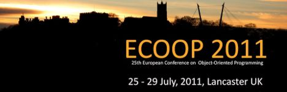

Publications
HornetsEye was presented on a couple of conferences already. Thanks to the anonymous reviewers for the helpful and inspiring comments.
ECOOP 2011
Hornetseye was demonstrated at the 25th European Conference on Object-Oriented Programming (ECOOP) 2011 in Lancaster, United Kingdom (abstract). Thanks to the conference organizers and thanks to all the attendees for an interesting and stimulating conference.

7th ShRUG meeting
Hornetseye was demonstrated at the 7th Sheffield Ruby User Group (ShRUG) meeting in Sheffield, United Kingdom (presentation slides). Thanks to the organizers and thanks to the audience for attending.
RubyConf 2009
HornetsEye was presented at RubyConf 2009 in San Francisco, California (presentation slides and video). Thank you to the conference organizers for all their hard work and thanks to all the people for their feedback and encouragement.
Manchester Science Festival 2009
HornetsEye was presented at the Manchester Science Festival 2009 as part of the “Walking with Robots” special exhibition.
AVA meeting at Bristol 2008
HornetsEye was presented at the AVA meeting at Bristol 2008 (poster).
OSCON 2008
HornetsEye was presented at OSCON 2008 in Portland, Oregon. The title of the talk was “Real-time computer vision with Ruby” and it was part of the schedule of Ruby talks (slides). A big thank you to the conference organizers and thanks to the audience for the positive feedback and suggestions, thanks to all the people I met for the interesting conversations!
ICIA 2008
HornetsEye was presented at ICIA 2008 in Zhangjiajie (张家界) , China. The title of the publication is “A Machine Vision Extension for the Ruby Programming Language” and a live demo of HornetsEye was given. A big thank you to the conference organizers and thanks to all the people who I met for the exciting conversations!
ICSPC 2007
HornetsEye was presented at ICSPC 2007 in Dubai (دبيّ), United Arab Emirates. The title of the publication is “Steerable filters generated with the hypercomplex dual-tree wavelet transform” and HornetsEye was presented as part of the poster session. A big thank you to the conference organizers and thanks to all the people who I met for the interesting conversations!